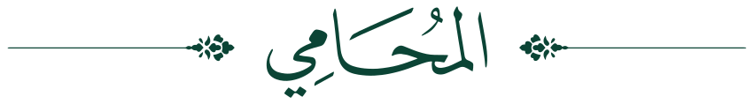

التقاضي التجاري
تمثيل الشركات والتجّار أمام المحاكم التجارية في منازعات العقود والشراكة والمقاولات، وصياغة الاتفاقيات بما يوافق نظام الشركات.

للتَّوثيقِ والمُحاماةِ والاستشاراتِ القانونيَّة
حقٌّ يُصان بالنظام، وعقدٌ يُوثَّق بالثقة
مكتبٌ سعوديٌّ في مكة المكرمة، يجمع بين الترافع أمام المحاكم واللجان، والاستشارات القانونية، والتوثيق المرخَّص من وزارة العدل.
عن المكتب
مكتب المحامي عبدالله بن سعد بن سراج آل مُطارد للتوثيق والمحاماة والاستشارات القانونية، مكتبٌ مرخَّصٌ من وزارة العدل بترخيص محاماةٍ رقم 42/740، ومقرُّه مكة المكرمة — بطحاء قريش. يتولّى الترافع عن موكّليه أمام المحاكم واللجان، ويقدّم الاستشارات الشرعية والنظامية على أساسٍ من النصّ لا من الظنّ.
يقوم عمل المكتب على قاعدةٍ واحدة: أن يُبنى الرأي على النظام والسابقة القضائية لا على التقدير، وأن تُصاغ الوثيقة صياغةً تُغني عن الخصومة قبل وقوعها، وتصمد أمامها إن وقعت. ويُدير المكتب قضايا موكّليه من الاستشارة الأولى إلى تنفيذ الحكم، بمتابعةٍ موصولةٍ لا تنقطع عند باب المحكمة.
ما نتولّاه
ترافعٌ وصياغةٌ واستشارة، بحسب المحاكم المختصّة ومسمّياتها النظامية.
تمثيل الشركات والتجّار أمام المحاكم التجارية في منازعات العقود والشراكة والمقاولات، وصياغة الاتفاقيات بما يوافق نظام الشركات.
الترافع أمام المحاكم العمّالية عن أصحاب العمل والعاملين في دعاوى الفصل والمستحقّات ومكافأة نهاية الخدمة، ومراجعة اللوائح والعقود.
قضايا النفقة والحضانة والولاية والطلاق والخلع، وقسمة التركات وحصر الورثة، أمام محاكم الأحوال الشخصية.
فتح طلبات التنفيذ ومتابعة إجراءاتها أمام محاكم التنفيذ، واستيفاء الديون والأحكام والأوراق التجارية، ودفع منازعات التنفيذ.
منازعات الملكية والحيازة والقسمة وعقود البيع والإيجار، ودعاوى إخلاء العقار، مع مراجعة الصكوك ومستندات الإفراغ قبل التعاقد.
تمثيل الأطراف في الدعاوى التحكيمية وصياغة شروط التحكيم، والعمل مُحكَّماً، وإدارة التسويات الوديّة قبل بلوغ ساحة القضاء.
ترخيص توثيق رقم 41/2007
الوثيقة الصادرة عن الموثّق المرخَّص وفق نظام التوثيق لها قوّة الإثبات، وتُعدّ سنداً تنفيذياً فيما تضمّنته من التزام — ثقةٌ تُغنيك عن الخصومة قبل أن تبدأ.
توثيق إفراغ صكوك الملكية العقارية من البائع إلى المشتري، وتدقيق الصكّ والأطراف قبل إتمام الإفراغ.
إصدار الوكالات الشرعية بصياغةٍ محدّدة النطاق لا مفتوحة، وفسخها عند انتهاء الحاجة.
توثيق الرهن على العقار وتعديله وفكّه بعد سداد الالتزام، بما يحفظ مركز الدائن والمدين معاً.
توثيق عقود تأسيس الشركات وملاحق تعديلها وقرارات الشركاء، ومحاضر الجمعيات العمومية.
الإقرار بالمبالغ المالية والمنقولات، وإقرار الكفالة الحضورية والغرميّة، بصيغةٍ تصلح للاحتجاج بها.
توثيق التصرّفات على العلامات التجارية وبراءات الاختراع وحقوق المؤلف، والعقود الواردة على المال المنقول.
بين المحاماة والتوثيق فرقٌ يجب أن يكون بيّناً: في المحاماة نُمثّلك أنت، ونُخاصم عنك، وننحاز لحقّك. وفي التوثيق نُمثّل الوثيقة لا طرفاً فيها، فنقف على مسافةٍ واحدةٍ من المتعاقدَين، ولا نوثّق إلّا ما استوفى شرطه النظاميّ.
ويجيز نظام التوثيق الجمع بين الصفتين: فمهنة المحاماة هي المهنة الوحيدة التي يجوز للموثّق مزاولتها إلى جانب التوثيق.
ما يميّز العمل هنا
محاماةٌ برقم 42/740، وتوثيقٌ برقم 41/2007 — كلاهما من وزارة العدل. فما تحتاج إثباته وما تحتاج الدفاع عنه، تحت سقفٍ واحدٍ ومسؤوليّةٍ واحدة.
محامٍ مرخَّص وعضوٌ في الهيئة السعودية للمحامين، ومستشارٌ قانونيّ ومُحكَّم ومدرّبٌ قانونيّ، وممثّلٌ للغرفة التجارية بمحافظة المخواة — صفاتٌ مُعتمدةٌ لا أوصافٌ تسويقية.
يسند العملَ أخصّائيّون قانونيّون بدرجات ماجستير في القانون المقارن والشريعة، وإدارةٌ قانونيةٌ تتابع الإجراء، ومساعدٌ قانونيّ — فلا يتعطّل ملفٌّ بغياب أحد.
من يعمل على قضيّتك
يقود المكتبَ المحامي عبدالله بن سعد بن سراج آل مُطارد، محامٍ وموثّقٌ مرخَّصان من وزارة العدل، وعضو الهيئة السعودية للمحامين، ومستشارٌ قانونيّ ومُحكَّم ومدرّبٌ قانونيّ، وممثّلُ الغرفة التجارية بمحافظة المخواة.
ويعمل إلى جانبه فريقٌ من الأخصّائيّين القانونيّين، منهم حَمَلةُ ماجستير في القانون المقارن، وفي الشريعة والتفسير. تتولّى الإدارةُ القانونية ضبطَ الإجراء ومواعيده، ويسند العملَ اليوميَّ مساعدٌ قانونيّ — توزيعٌ يجعل لكلّ ملفٍّ عيناً ترعاه، ولكلّ موعدٍ من يحفظه.
للتواصل
اعرض مسألتك على المكتب، ولك رأيٌ صريحٌ في موقفك النظاميّ: أتمضي، أم تُصالِح، أم تنتظر.